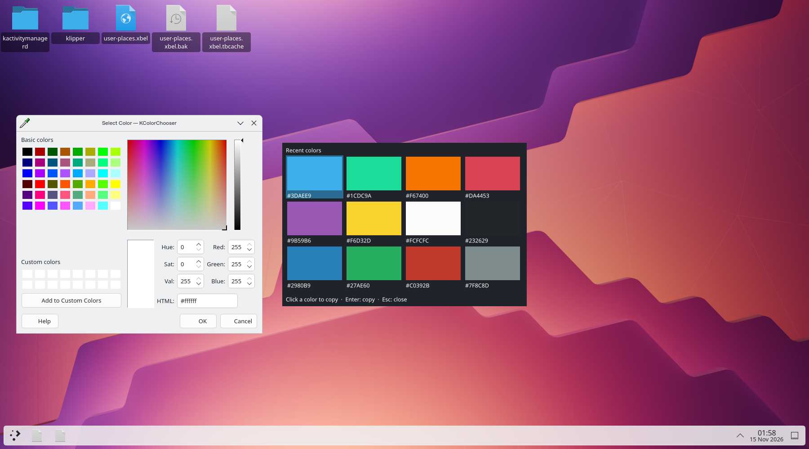
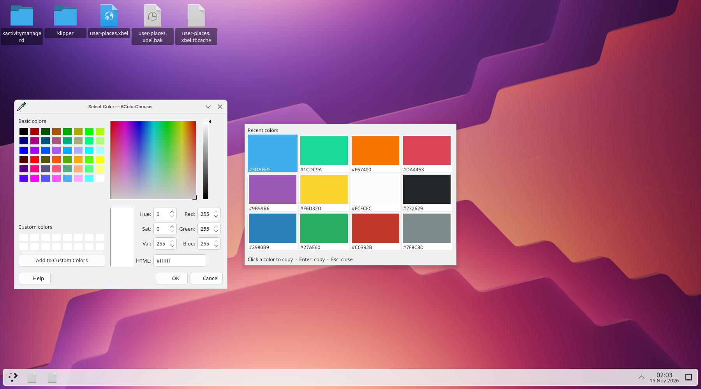
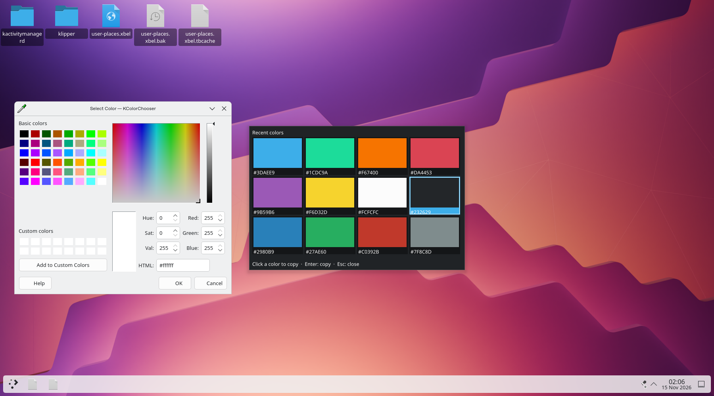
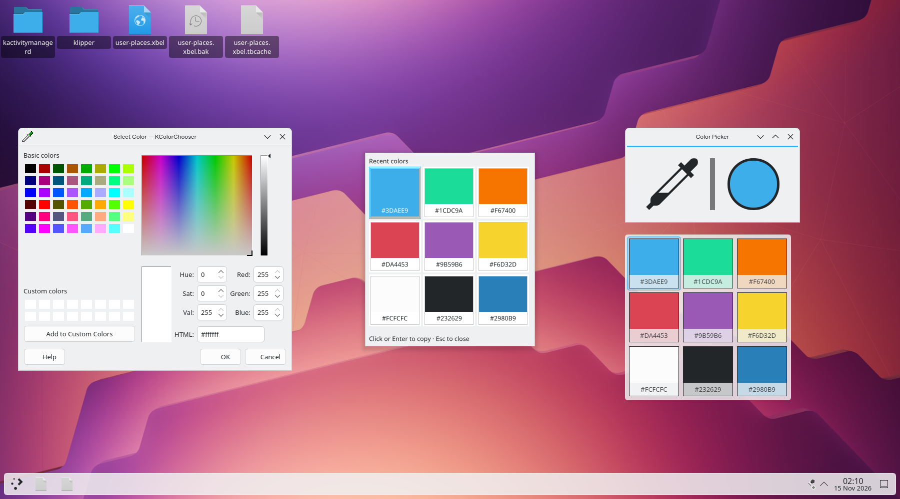
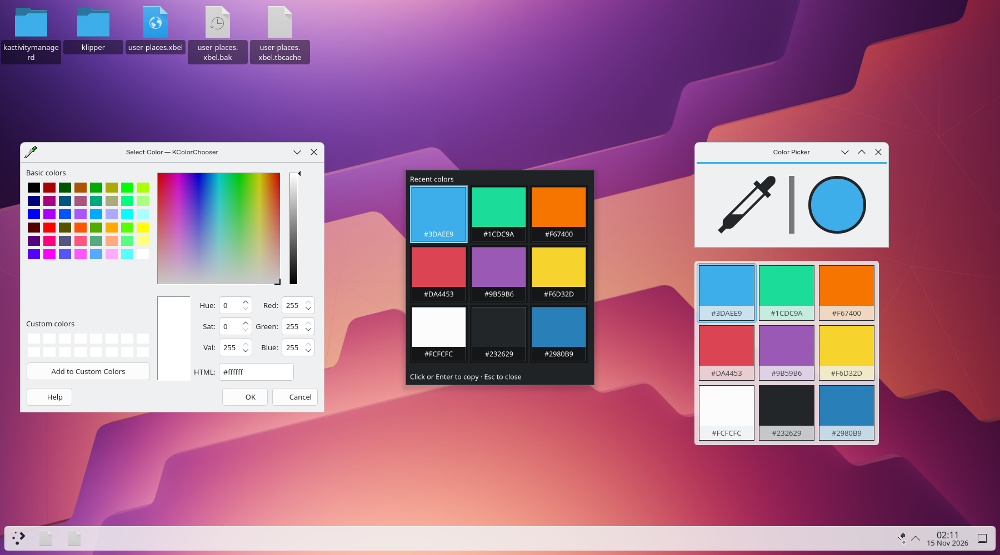
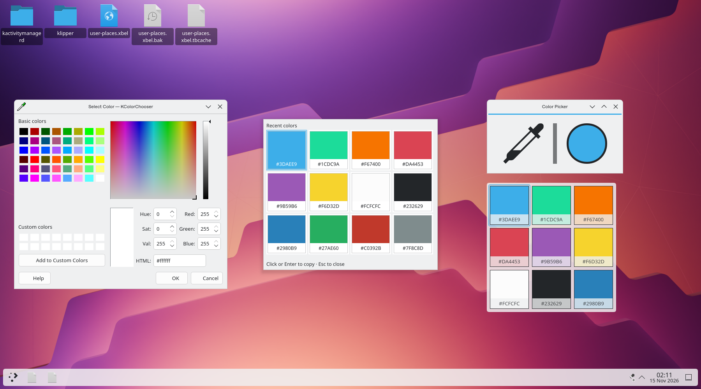
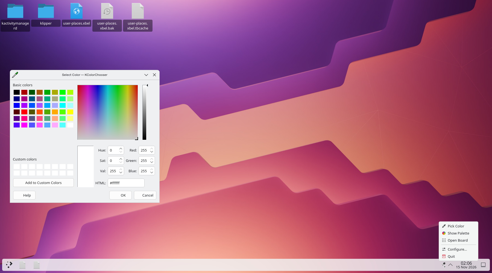

Completed review rounds in a real Breeze Plasma session at scale 1 / 96 DPI. Independent critics inspected rendered output. Titles were visible, so reviews were not fully blind.
Baseline critic preferred KColorChooser. System font rendering, selection contrast and copy guidance addressed the first gap.

Initial shadow rejected as too dense; quieter border and softer shadow accepted.
Light/dark palette and contrasting focus outlines accepted across cyan, white and near-black.


KDE Color Picker added as a second bar. Revised composition, swatch boundaries and copy instructions accepted. Final critic preferred our history popup for native polish and the recall/copy task. KColorChooser retains broader color-editing capabilities. Local native applet was Plasma 6.3.5, not current upstream master; dark variant was inspected beside light references.



Native icons, grouping and compact Configure… label accepted.

Validation: four history tests and five tray tests; builds, formatting, whitespace checks; actual keyboard and mouse input with logged synthetic history/copy requests. This fixture does not establish physical screen-picking or clipboard ownership. See adjacent round notes for evidence and limitations.